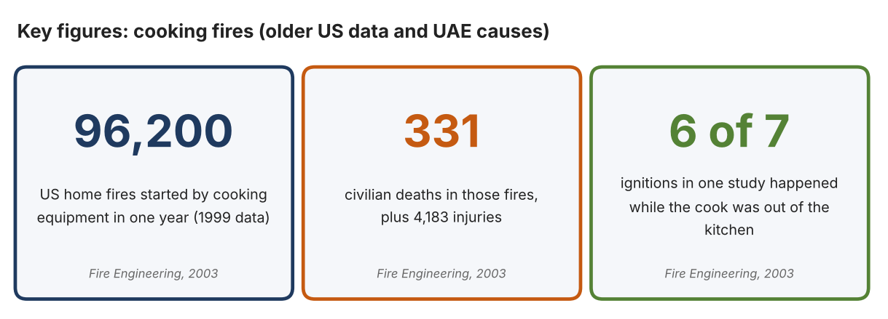
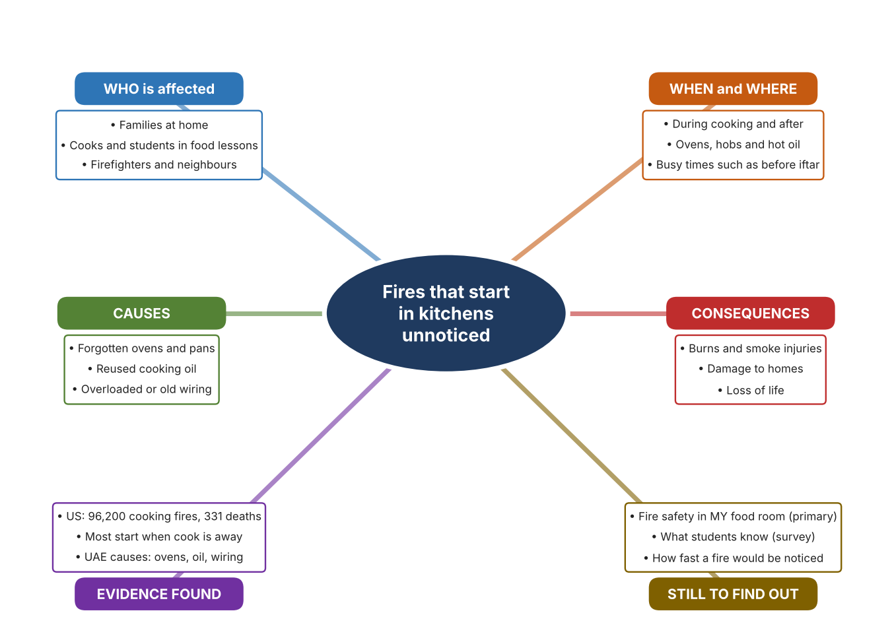
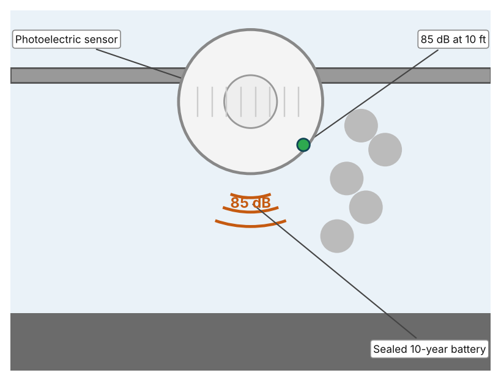
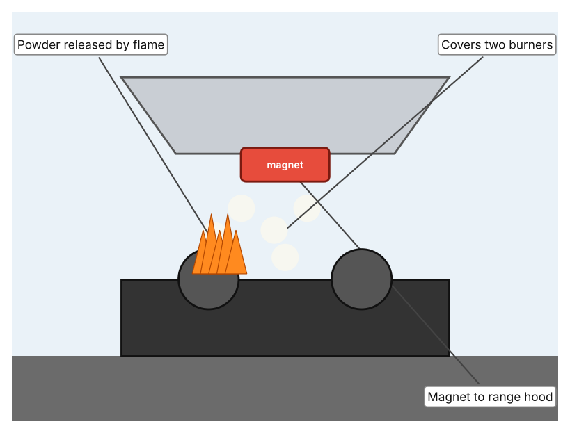
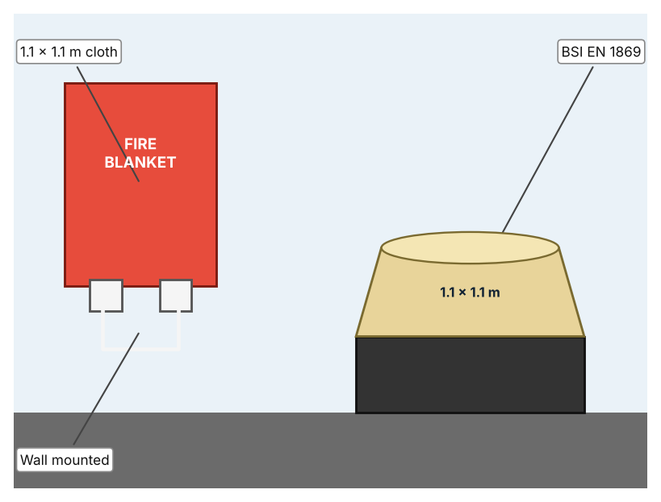

A1 · Design need
Identify and explain the problem faced by your client and community.
My client is the Food Technology Department of a Dubai school, represented by the Head of Department. Students cook in the school kitchen and many of them also cook at home, and the department wants them to be safe around heat, oil and gas. It needs the risk of a kitchen fire to be reduced, and it needs fires to be noticed and dealt with before they spread.
The people most affected are the students and staff who cook, because they are closest to hot surfaces and flammable oil. Families at home are a second group, because most kitchen fires start in houses and flats. Firefighters and neighbours are a third group, because they respond when a fire grows.
The need is real because cooking is a leading source of fires. The US National Fire Protection Association data reported by Fire Engineering showed 96,200 home fires from cooking equipment in one year, with 331 civilian deaths and 4,183 injuries, and one study found that in six of seven fires the cook was out of the kitchen when ignition began (Fire Engineering Staff). In the UAE, Gulf News reported that fires in kitchens during Ramadan were linked to forgotten ovens, overloaded electricity, cooking oil that had been reused many times, and poorly maintained cables and gas pipes (Al Shouk). Both sources are old, and the US data are not UAE data, so I need to find out about my own school.
Figure 1 summarises the key numbers. The numbers are from 1999 in the US and I did not find UAE counts, so I treat them as a pattern and not as proof about my school. In my own words: a kitchen fire grows quickly, so the first minute decides how serious it becomes. Figure 2 is my mind map of the problem.
302 words


A2 · Research plan
Six research questions of different types, each with a priority, a research type and evidence.
| # | Question | Priority | Primary / secondary | Evidence | Brief answer |
|---|---|---|---|---|---|
| 1 | Factual: How many home fires are caused by cooking, and how many people are hurt? | High | Secondary | Fire Engineering, 2003 (Appendix A, Source 1) | US 1999 data: 96,200 fires, 331 civilian deaths and 4,183 injuries; three of four involve the range; more than half of non-fatal injuries happen while fighting the fire. |
| 2 | Factual: What causes kitchen fires in the UAE, and what should people do? | High | Secondary | Gulf News, 2018 (Appendix A, Source 2) | Forgotten ovens, electricity overload, delayed maintenance of cables and gas pipes and reused oil; do not use water on an oil fire; smother it, switch off power and call 997. |
| 3 | Conceptual: How can a fire be detected early, and how can it be put out? | Medium | Secondary | Kidde alarm page (Source 3); FireStop page (Source 4); fire blanket page (Source 5) | A photoelectric alarm senses smoke and sounds at 85 dB; a stove suppressor releases powder when it senses a flame; a fire blanket smothers a pan fire. |
| 4 | Debatable: Should a home or school kitchen rely on smoke alarms, on automatic suppression, or on equipment people must use by hand? | Medium | Secondary | Appendix A, Sources 3, 4 and 5 | An alarm warns but does not stop the fire; automatic powder acts without a person but only at the hob; a blanket works only if someone is present and trained. My view: alerting early matters most. |
| 5 | Debatable (challenges my assumption, UAE source): Kitchen fires are mostly a problem in homes, so a school does not need to investigate them. | High | Secondary | Gulf News, 2018 (Source 2); Fire Engineering, 2003 (Source 1) | The sources describe homes, but the same hazards (hot oil, unattended pans, old wiring) exist in a school food room. I found no school-specific data, so my own checklist must show whether the risk is present. |
| 6 | Factual (primary): What fire safety equipment and habits exist in our food room, and what do students know about what to do? | High | Primary | Own food-room safety checklist and student survey (Appendix A, Sources 6 and 7) | [Student data needed: write the checklist results (with the teacher's permission) and survey averages, then two sentences on the pattern you see.] |
A3 · Existing products
Three significantly different products, each analysed with ACCESS FM, with pros and cons.
Product 1: Photoelectric smoke alarm (Kidde P3010K-CA)

Illustration by the author based on the Kidde P3010K-CA specification, Kent (Appendix A, Source 3). [Student: replace with a photo from the source, cited MLA 9]
Product 2: Stove suppressor (StoveTop FireStop)

Illustration by the author based on the StoveTop FireStop listing, HD Supply (Appendix A, Source 4). [Student: replace with a photo from the source, cited MLA 9]
Product 3: Fire blanket (Kidde FB1)

Illustration by the author based on the Kidde FB1 page, Kidde (Appendix A, Source 5). [Student: replace with a photo from the source, cited MLA 9]
ACCESS FM analysis
| ACCESS FM | Product 1 | Product 2 | Product 3 |
|---|---|---|---|
| Aesthetics | Round white disc; 13.3 cm across (Kent). | Small unit on the range hood; 3 × 3.4 × 0.87 in (HD Supply). | Red wall container; look not described (Kidde). |
| Cost | Price not stated. | US$331 for a pack of 10, US$33.10 each (HD Supply). | Price not listed. |
| Customer | Anyone with a ceiling or wall to fit it. | Households and kitchens with a range hood. | People who can reach and use the blanket quickly. |
| Environment | Sealed lithium battery lasts 10 years; no replacement. | Six-year life; magnetic fixing; non-toxic potassium bicarbonate powder. | 5-year cloth guarantee. |
| Size | 13.3 cm diameter, 4.1 cm deep, 0.18 kg. | 3 × 3.4 × 0.87 in assembled. | Cloth 1.1 × 1.1 m; unit 202 × 175 × 45 mm. |
| Safety | Sounds an 85 dB alarm. | UL listed; acts automatically. | BSI certified to EN 1869 for fat-pan and clothing fires. |
| Function | Detects smoke and sounds an alarm. | Releases powder when it meets direct flame. | Smothers a fire when placed over it. |
| Materials | Materials are not stated. | Siliconized potassium bicarbonate powder. | Materials are not stated. |
Pros and cons
| Product 1 | Product 2 | Product 3 | |
|---|---|---|---|
| Pro | Works all day without a person and the battery lasts 10 years. | Acts automatically on the hob without anyone present. | Needs no power and is cheap and simple to understand. |
| Con | Warns only; it does not put the fire out. | Covers only two burners and its activation temperature is not listed. | Works only if a person is present, trained and quick. |
A4 · Design brief
Restate the need, summarise the research and the existing products, and state the design intent.
My client, the Food Technology Department of a Dubai school, needs the risk of kitchen fires to be reduced and fires to be noticed early. The problem is real: US data reported in 2003 show 96,200 home fires from cooking equipment in one year, with 331 civilian deaths and 4,183 injuries (Appendix A, Source 1). UAE reports link kitchen fires to forgotten ovens, overloaded electricity, reused oil and poorly maintained cables and gas pipes (Appendix A, Source 2).
My research shows that many kitchen fires begin when the cook has left the room, so detection and quick response matter (Appendix A, Sources 1 and 2). Both sources are old and I found no UAE counts, so I need my own evidence. My debatable questions led me to decide that alarms, automatic suppression and hand tools each cover only part of the problem, and my challenged assumption (that kitchen fires are only a home problem) showed me that the same hazards exist in a school food room. I will gather my own evidence with the food-room checklist and the survey, always with permission (Appendix A, Sources 6 and 7).
I analysed three very different existing solutions. A photoelectric smoke alarm sounds at 85 dB and has a sealed 10-year battery, but it only warns (Appendix A, Source 3). A stove suppressor releases powder when it meets a flame and covers two burners, but it protects only the hob and its activation temperature is not listed (Appendix A, Source 4). A fire blanket smothers a pan or clothing fire and needs no power, but a trained person must reach it quickly (Appendix A, Source 5). They give me three ideas for inspiration: detecting, suppressing automatically, and smothering by hand. Each has a weakness that another covers.
My design intent is therefore to create a solution that detects a flame or fire in a kitchen early and alerts people so that they can act. It must be affordable, simple to understand, safe to install near heat, and reliable without false alarms. I have deliberately not fixed what form it will take. That decision will be made in Criterion B, after I analyse my own checklist and survey against the evidence in Appendix A.
370 words
Appendix A · Research notes and sources
Secondary sources in MLA 9, with notes and where each source is used.
| # | Source (MLA 9) | Key notes | Used in |
|---|---|---|---|
| 1 | Fire Engineering Staff. “Cooking Remains Leading Cause of Home Fires, NFPA Data Show.” Fire Engineering, 14 Nov. 2003, www.fireengineering.com/fire-safety/cooking-remains-leading-cause-of-home-fires-nfpa-data-show/. Accessed 21 Oct. 2026. | US 1999 data: 96,200 home fires from cooking equipment; 331 civilian deaths; 4,183 injuries; six of seven ignitions while the cook was out of the kitchen (one study); three of four involve the range; two-thirds start in the first 15 minutes (one study). Old and not from the UAE. | A1; A2 Q1 and Q5; A4. |
| 2 | Al Shouk, Ali. “Most Fires in Ramadan Start in Kitchen.” Gulf News, 5 Nov. 2018, gulfnews.com/amp/story/uae%2Fmost-fires-in-ramadan-start-in-kitchen-1.2223675. Accessed 21 Oct. 2026. | No counts given; causes: forgotten ovens, electricity overload, delayed maintenance of cables and gas pipes, reused cooking oil; do not use water on oil; call 997. Last updated 2018. | A1; A2 Q2 and Q5; A4. |
| 3 | “10-Year Battery Worry-Free Smoke Alarm P3010K-CA.” Kidde, kent.ca/media/wysiwyg/PDFs/documents/6893007-spec.pdf. Accessed 21 Oct. 2026. | Photoelectric; 85 dB at 10 ft; sealed 3 V lithium, 10 years; 13.3 cm × 4.1 cm; 0.18 kg; coverage not specified. | A2 Q3 and Q4; A3 Product 1; A4. |
| 4 | “Stovetop Firestop Automatic Cooktop Fire Suppressor, Package of 10.” HD Supply, hdsupplysolutions.com/p/stovetop-firestop-automatic-cooktop-fire-suppressor-package-of-10-p126799. Accessed 21 Oct. 2026. | Releases powder in direct flame; potassium bicarbonate; magnetic mount; 3 × 3.4 × 0.87 in; one unit covers two burners; 6-year life; UL listed; US$331 per 10; activation temperature not listed. | A2 Q3 and Q4; A3 Product 2; A4. |
| 5 | “Kidde Fire Blanket FB1.” Kidde, kidde.com/life-safety/en/uk/products/fire-blankets/fb1. Accessed 21 Oct. 2026. | 1.1 × 1.1 m; unit 202 × 175 × 45 mm; BSI EN 1869; fat-pan and clothing fires; wall mounted; 5-year cloth guarantee; price not listed. | A2 Q3 and Q4; A3 Product 3; A4. |
| 6 | Primary: food-room safety checklist, completed by the student on [date]. Accessed own data. | [Student: summarise your counts.] | A2 primary question; A4. |
| 7 | Primary: survey of [number] people, completed on [date]. | [Student: summarise your averages.] | A2 primary question; A4. |
Primary research instrument 1: food-room safety checklist
Student completes the checklist with the teacher present and does not light or test any equipment.
| Item | Present (Y/N) | Within reach (Y/N) | Checked recently (Y/N) | Staff or students know how to use (Y/N) | Notes |
|---|---|---|---|---|---|
| Smoke alarm | |||||
| Fire blanket | |||||
| Fire extinguisher | |||||
| Exit and emergency number sign |
Primary research instrument 2: survey
Rate each statement from 1 (strongly disagree) to 5 (strongly agree). Collect responses with permission and record no names.
| Statement | 1 | 2 | 3 | 4 | 5 | Total responses |
|---|---|---|---|---|---|---|
| I know what to do if oil in a pan catches fire. | ||||||
| I know where the fire blanket or extinguisher is in the food room. | ||||||
| Pans are sometimes left unattended while cooking. | ||||||
| I would feel safer with an automatic fire alert. |